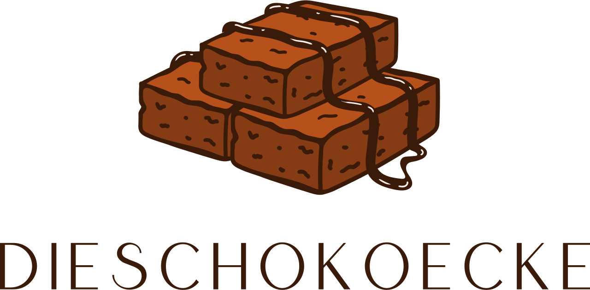
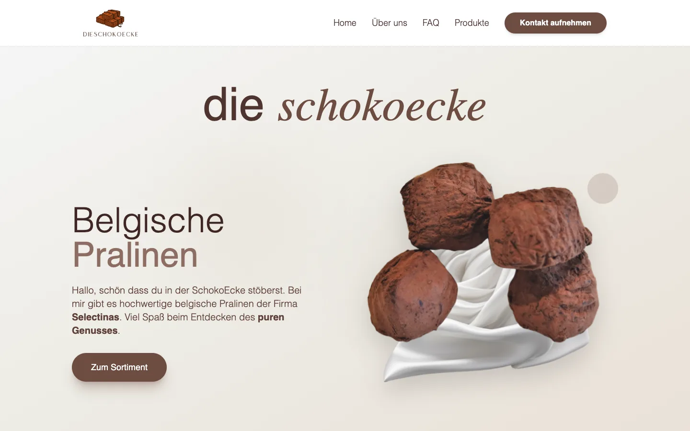

dieschokoeckeWebseite mit Selbstverwaltung.
Eine moderne Webseite für die belgische Pralinen-Manufaktur – Sortiment, Texte und FAQ verwaltet dieschokoecke komplett selbst.

- Branche
- Einzelhandel (Pralinen)
- Leistung
- Webentwicklung
- Besonderheit
- Pflege ohne Technikwissen
Sortiment ohne Technikwissen
Sortiment, Texte und FAQ bleiben ohne Technikwissen aktuell.
-
Die Ausgangslage
dieschokoecke verkauft belgische Pralinen in Franken – und das Sortiment ändert sich laufend. Eine Webseite, für deren Aktualisierung jedes Mal jemand beauftragt werden muss, wäre dauerhaft veraltet oder dauerhaft teuer.
-
Unsere Lösung
Eine moderne Webseite mit vollständiger Selbstverwaltung: Produkte lassen sich hinzufügen, bearbeiten und entfernen, Texte und FAQ jederzeit anpassen. Die Oberfläche ist so gestaltet, dass alles ohne technisches Wissen funktioniert.
-
Das Ergebnis
Das Sortiment auf der Webseite ist immer aktuell, Kunden finden stets die neuesten Informationen – und dieschokoecke behält die volle Kontrolle über den eigenen Auftritt, ohne laufende Agenturkosten.
Das steckt drin
-
Produkte selbst hinzufügen, bearbeiten & entfernen
-
Texte & FAQ flexibel anpassbar
-
Bedienung ohne technisches Wissen
-
Modernes Design, passend zur Marke
Dein Projekt könnte das nächste sein.
Erzähl uns von deiner Idee. Im kostenlosen Erstgespräch klären wir, was sich für dein Team verbessern lässt.